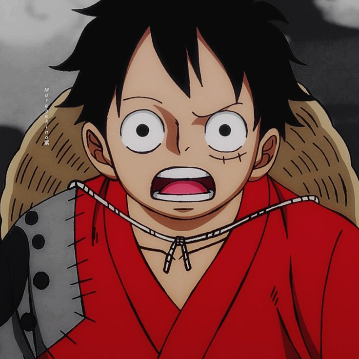
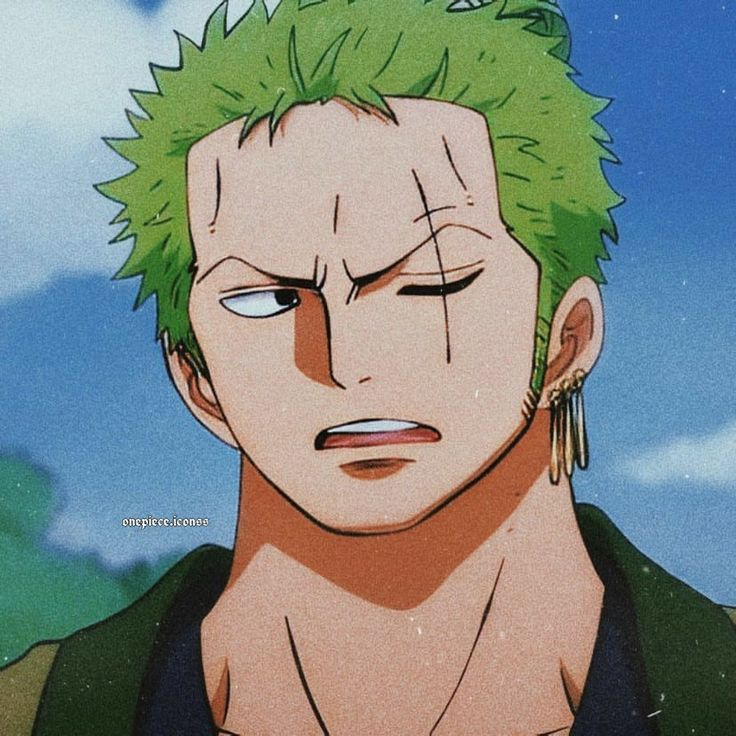
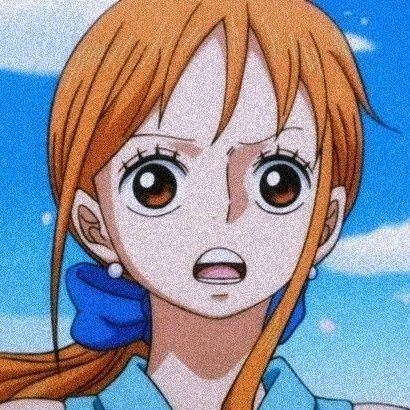
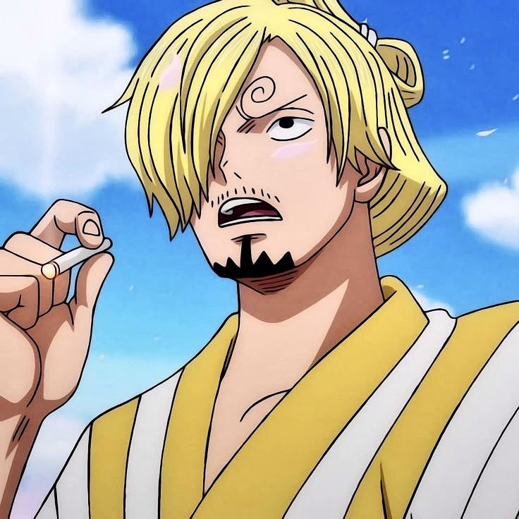
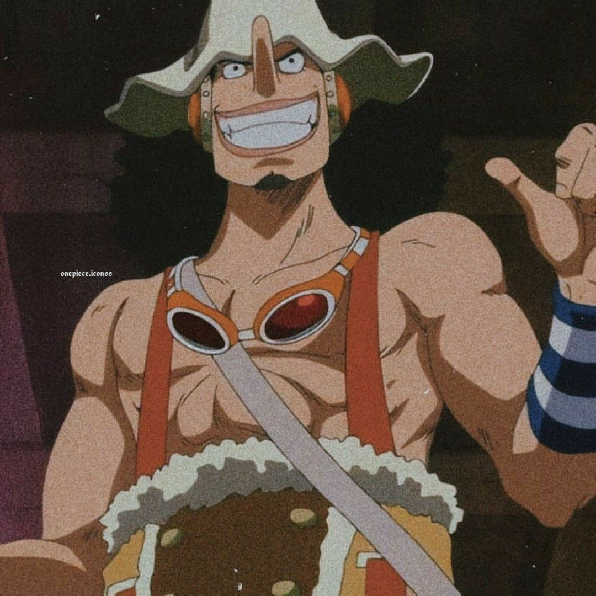
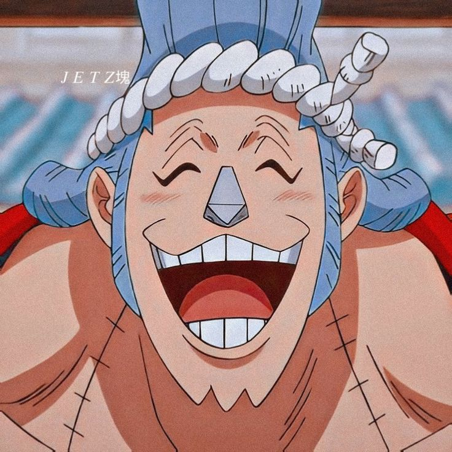
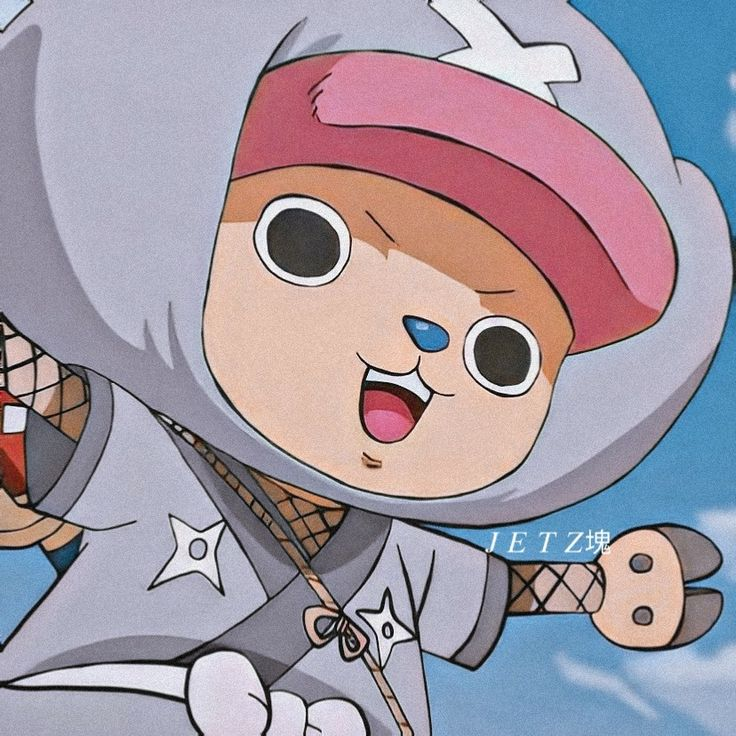
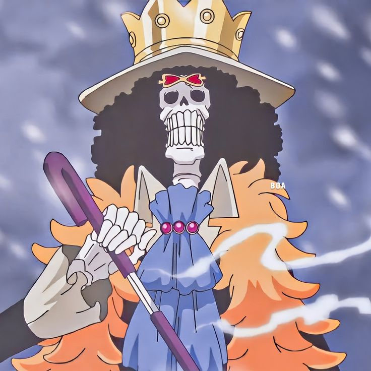
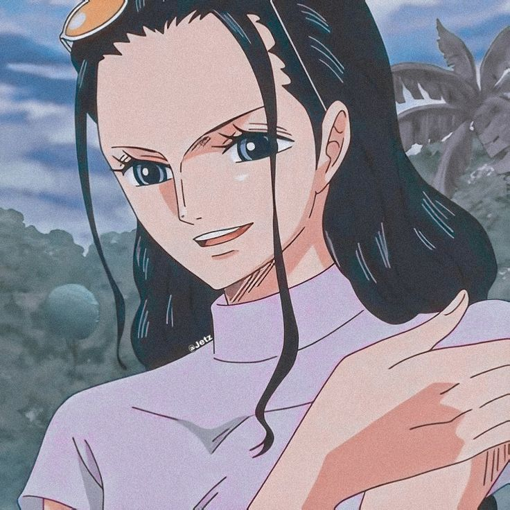

Monkey D. Luffy

Monkey D. Luffy, o protagonista de One Piece, é um jovem pirata com um sonho ambicioso: tornar-se o Rei dos Piratas e encontrar o lendário tesouro, o One Piece. Comendo a Fruta do Diabo Gomu Gomu no Mi, Luffy adquire a habilidade de esticar seu corpo como borracha, o que o torna um combatente único e poderoso.
Mais informações
Roronoa Zoro

Roronoa Zoro é o espadachim dos Piratas do Chapéu de Palha e o primeiro a se juntar à tripulação de Luffy. Sonhando em se tornar o maior espadachim do mundo, Zoro possui uma habilidade excepcional com três espadas e um forte senso de justiça.
Mais informações
Nami

Nami é a navegadora dos Piratas do Chapéu de Palha e uma especialista em meteorologia. Com um grande senso de direção e habilidades em cartografia, Nami é responsável por guiar a tripulação em suas aventuras.
Mais informações
Vinsmoke Sanji

Vinsmoke Sanji, o cozinheiro dos Piratas do Chapéu de Palha, é conhecido por sua paixão pela culinária e suas habilidades em combate. Nascido na realeza de Germa 66, Sanji possui uma lealdade inabalável à sua tripulação e um código de honra que o impede de machucar mulheres.
Mais informações
Usopp

Usopp é o atirador dos Piratas do Chapéu de Palha e um mentiroso consumado. Apesar de sua covardia inicial, Usopp demonstra uma grande coragem em momentos de crise e é um amigo leal e criativo.
Mais informações
Franky

Franky é o carpinteiro dos Piratas do Chapéu de Palha e um ciborgue. Com sua paixão por construir e modificar navios, Franky é responsável por manter o Thousand Sunny em perfeitas condições e criar armas e equipamentos inovadores para a tripulação.
Mais informações
Tony Tony Chopper

Tony Tony Chopper é o médico dos Piratas do Chapéu de Palha. Um renomado médico que comeu a Fruta Hito Hito, Modelo Ren, permitindo-lhe se transformar em um humanoide e usar diversas formas para o combate.
Mais informações
Brook

Brook é o músico dos Piratas do Chapéu de Palha e um esqueleto que comeu a Yomi Yomi no Mi, uma Fruta do Diabo que lhe permitiu voltar à vida. Com seu violino e seu humor peculiar, Brook adiciona uma dose de alegria à tripulação.
Mais informações
Nico Robin

Nico Robin é a arqueóloga dos Piratas do Chapéu de Palha. Com a habilidade de fazer florescer partes de seu corpo, ela pode criar diversas armas e ferramentas para explorar ruínas e lutar. Seu conhecimento sobre a história do mundo é inestimável para a tripulação.
Mais informações